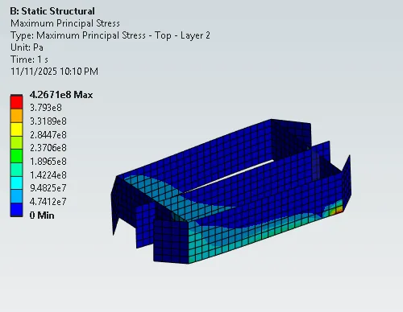
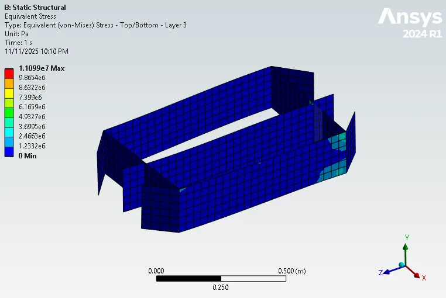
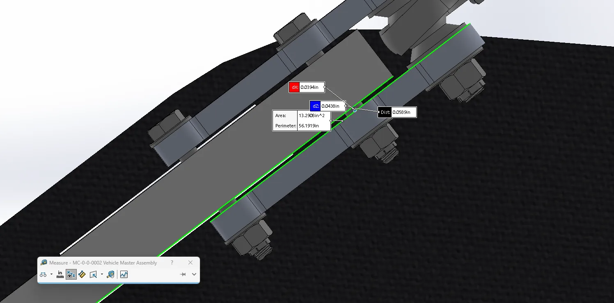

01The problem
The team needed to know whether the laminate-composite suspension box would survive the vehicle’s maximum load conditions. My goals were to:
- Verify the existing laminate design with finite element analysis
- Redesign it to meet a safety factor of at least 1
- Integrate it with the adjacent vehicle systems: the suspension mounting angles and the steering column
The initial design came out at a safety factor of 0.09, less than a tenth of what was required.
02Approach
-
Composite FEA
I entered the composite material data into Ansys Composite PrepPost (ACP) to define the laminate, then used Ansys Structural to run FEA on the suspension box under maximum load conditions.
-
Redesign around the stress concentrations
The results showed high stress concentrations at the joints. I redesigned the box in SolidWorks to support those joints, then reran the FEA to check the new design.
-
Fit it to the rest of the vehicle
I adjusted the design in SolidWorks to accommodate the suspension mounting angles and the steering column, checking clearances against the vehicle master assembly.



03Results
- Raised the design’s safety factor from 0.09 to 1.03 while limiting the weight increase to 8.9%.
- Delivered a finished suspension box design with its safety factor validated in Ansys, ready for manufacturing and integration into UC Berkeley’s 11th-generation solar vehicle.